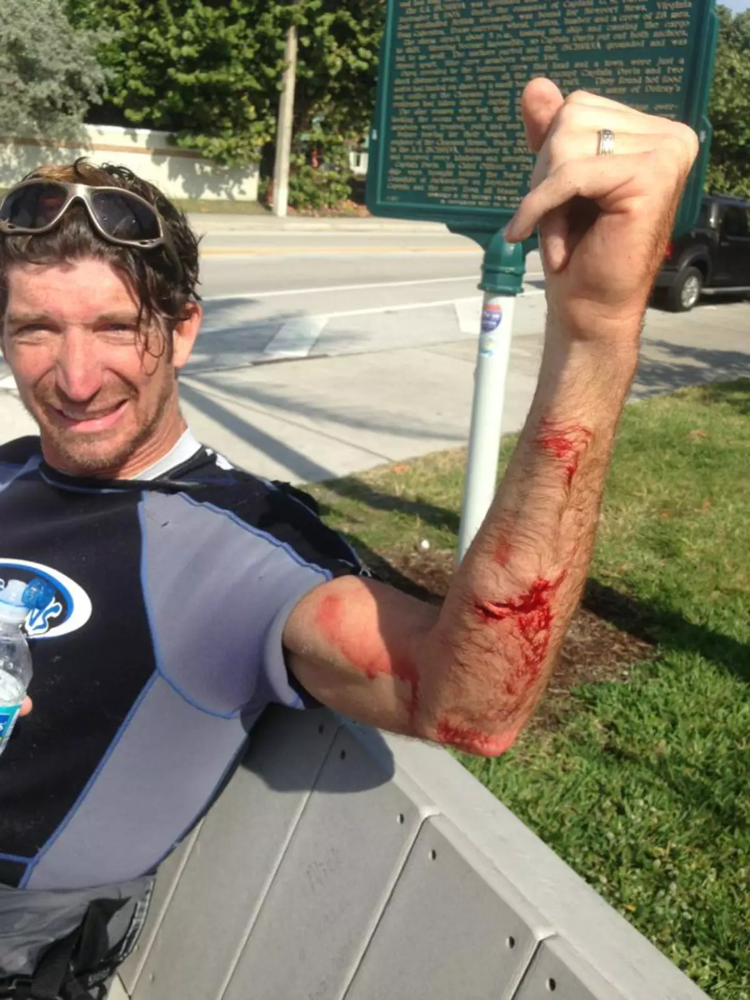
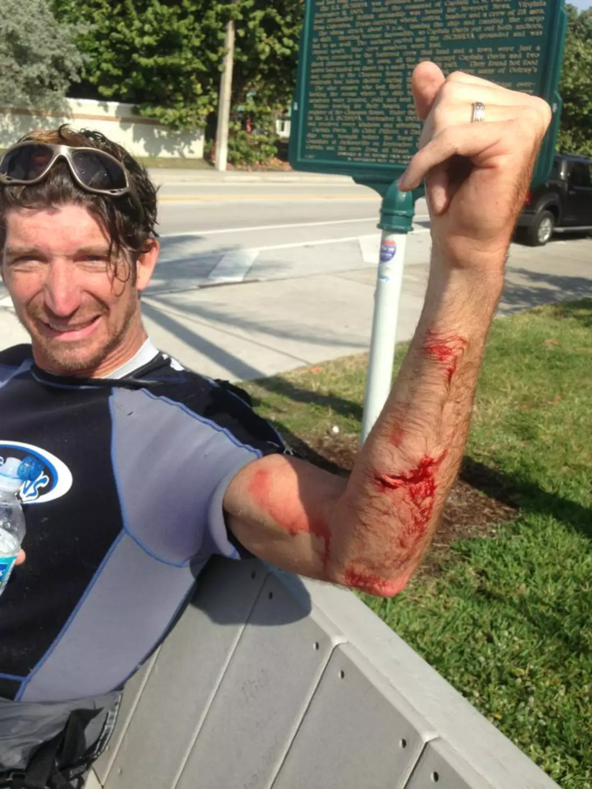
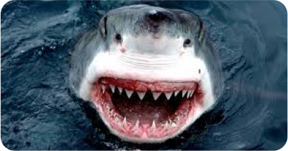
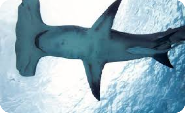
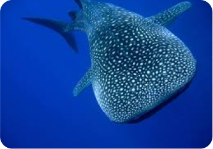
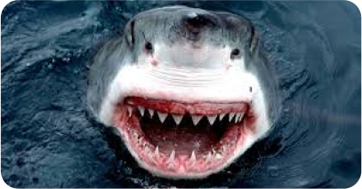
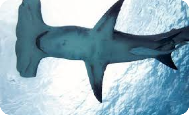
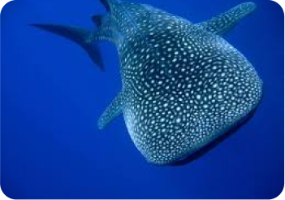
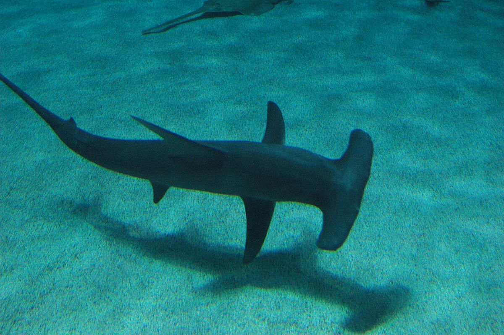
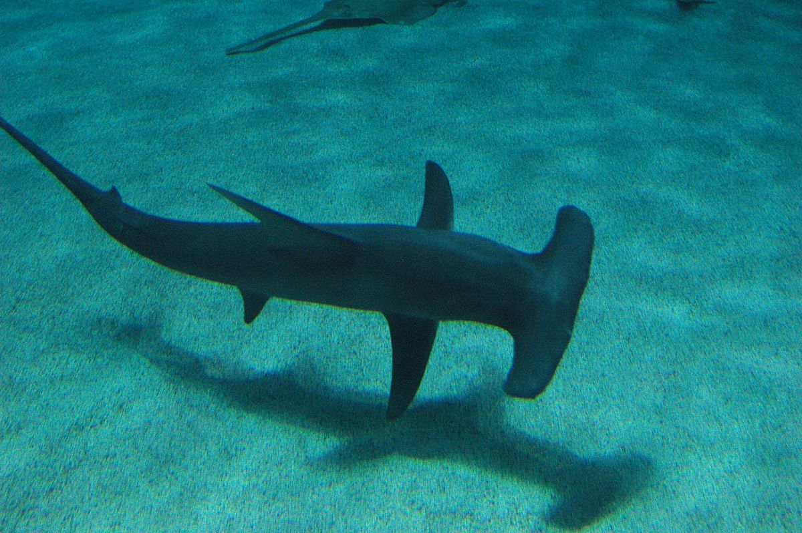

Seja Bem Vindo ao Tuibarro Explore
Maior Portal sobre Tubarões que você já viu

Os tubarões são predadores marinhos que habitam os oceanos há mais de 400 milhões de anos, sendo mais antigos que os dinossauros. Com mais de 500 espécies conhecidas, eles variam desde o pequeno tubarão-lanterna, de apenas 20 cm, até o gigantesco tubarão-baleia, que pode alcançar 12 metros. Conhecidos por seu papel crucial nos ecossistemas marinhos, os tubarões ajudam a manter o equilíbrio da vida oceânica, controlando populações de outras espécies. Embora muitas vezes retratados como perigosos, os tubarões são na verdade vítimas de diversas ameaças, como a pesca excessiva e a destruição de habitats, o que coloca várias espécies em risco de extinção.

.png)
A mordida de um tubarão pode causar ferimentos graves e, em alguns casos, ser fatal. A força da mordida depende do tamanho do tubarão, mas pode ser muito intensa.
 

Os motivos para ataques são variados: desequilíbrio ambiental, defesa do território ou confusão (Sim, os tubarões mordem ao confundir o ser humano com uma presa). Os tubarões acabam se atraindo pelo brilho de joias, acessórios com cores chamativas e sangramento. Por isso que é recomendado não entrar:
- Evitar banho com água turva;
- Agua acima da altura da cintura, em períodos chuvosos e com maré alta;
- Não entrar bebado

 





 

Curiosidades
- Os tubarões possuem narinas, entretanto, não são utilizadas na respiração. Essas estruturas estão
relacionadas com a olfação.
- Quando um tubarão para de nadar, ele afunda.
- O tubarão-baleia é a maior espécie de tubarão, entretanto, não é um grande predador.
- Os tubarões apresentam a capacidade de captar campos elétricos gerados por outras espécies no mar.
Isso faz com que um tubarão seja capaz de encontrar uma presa mesmo ela estando escondida.
- No intestino dos tubarões, observa-se uma estrutura em forma de saca-rolha que ajuda a aumentar a
superfície de contato com o alimento e também aumenta o tempo para o alimento passar pelo local.